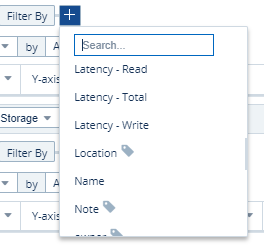
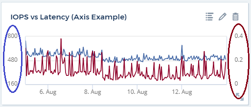

Dashboard Features
Contributors
 Download PDF of this page
Download PDF of this page
Dashboards and widgets allow great flexibility in how data is displayed. Here are some concepts to help you get the most from your custom dashboards.
- Widget Placement and Size
- Duplicating a Widget
- Displaying Widget Legends
- Transforming Metrics
- Dashboard widget queries and filters
- Grouping and Aggregation
- Showing Top/Bottom Results
- Grouping in Table Widget
- Dashboard time range selector
- Overriding Dashboard Time in Individual widgets
- Primary and Secondary Axis
- Expressions in widgets
- Variables
- Formatting Gauge Widgets
- Formatting Single-Value Widget
- Choosing the Unit for Displaying Data
- TV Mode and Auto-Refresh
- Dashboard Groups
- Pin your Favorite Dashboards
Widget Placement and Size
All dashboard widgets can be positioned and sized according to your needs for each particular dashboard.
Duplicating a Widget
In dashboard Edit mode, click the menu on the widget and select Duplicate. The widget editor is launched, pre-filled with the original widget’s configuration and with a “copy” suffix in the widget name. You can easily make any necessary changes and Save the new widget. The widget will be placed at the bottom of your dashboard, and you can position it as needed. Remember to Save your dashboard when all changes are complete.

Displaying Widget Legends
Most widgets on dashboards can be displayed with or without legends. Legends in widgets can be turned on or off on a dashboard by either of the following methods:
-
When displaying the dashboard, click the Options button on the widget and select Show Legends in the menu.
As the data displayed in the widget changes, the legend for that widget is updated dynamically.
When legends are displayed, if the landing page of the asset indicated by the legend can be navigated to, the legend will display as a link to that asset page. If the legend displays "all", clicking the link will display a query page corresponding to the first query in the widget.
Transforming Metrics
Cloud Insights provides different transform options for certain metrics in widgets (specifically, those metrics called "Custom" or Integration Metrics, such as from Kubernetes, ONTAP Advanced Data, Telegraf plugins, etc.), allowing you to display the data in a number of ways. When adding transformable metrics to a widget, you are presented with a drop-down giving the following transform choices:
- None
-
Data is displayed as is, with no manipulation.
- Rate
-
Current value divided by the time range since the previous observation.
- Cumulative
-
The accumulation of the sum of previous values and the current value.
- Delta
-
The difference between the previous observation value and the current value.
- Delta rate
-
Delta value divided by the time range since the previous observation.
- Cumulative Rate
-
Cumulative value divided by the time range since the previous observation.
Note that transforming metrics does not change the underlying data itself, but only the way that data is displayed.
Dashboard widget queries and filters
Queries
The Query in a dashboard widget is a powerful tool for managing the display of your data. Here are some things to note about widget queries.
Some widgets can have up to five queries. Each query will plot its own set of lines or graphs in the widget. Setting rollup, grouping, top/bottom results, etc. on one query does not affect any other queries for the widget.
You can click on the eye icon to temporarily hide a query. The widget display updates automatically when you hide or show a query. This allows you to check your displayed data for individual queries as you build your widget.
The following widget types can have multiple queries:
-
Area chart
-
Stacked area chart
-
Line chart
-
Spline chart
-
Single value widget
The remaining widget types can have only a single query:
-
Table
-
Bar chart
-
Box plot
-
Scatter plot
Filtering in dashboard queries
Here are some things you can do to get the most out of your filters.
Exact Match Filtering
If you enclose a filter string in double quotes, Insight treats everything between the first and last quote as an exact match. Any special characters or operators inside the quotes will be treated as literals. For example, filtering for "*" will return results that are a literal asterisk; the asterisk will not be treated as a wildcard in this case. The operators AND, OR, and NOT will also be treated as literal strings when enclosed in double quotes.
You can use exact match filters to find specific resources, for example hostname. If you want to find only the hostname 'marketing' but exclude 'marketing01', 'marketing-boston', etc., simply enclose the name "marketing" in double quotes.
Advanced Filtering
The following can be used to further refine your filters.
-
An asterisk enables you to search for everything. For example,
vol*rhel
displays all resources that start with "vol" and end with "rhel".
-
The question mark enables you to search for a specific number of characters. For example,
BOS-PRD??-S12
displays BOS-PRD12-S12, BOS-PRD13-S12, and so on.
-
The OR operator enables you to specify multiple entities. For example,
FAS2240 OR CX600 OR FAS3270
finds multiple storage models.
-
The NOT operator allows you to exclude text from the search results. For example,
NOT EMC*
finds everything that does not start with "EMC". You can use
NOT *
to display fields that contain no value.
Identifying objects returned by queries and filters
The objects returned by queries and filters look similar to those shown in the following illustration. Objects with 'tags' assigned to them are annotations while the objects without tags are performance counters or object attributes.

Grouping and Aggregation
Grouping (Rolling Up)
Data displayed in a widget is grouped (sometimes called rolled-up) from the underlying data points collected during acquisition. For example, if you have a line chart widget showing Storage IOPS over time, you might want to see a separate line for each of your data centers, for a quick comparison. You can choose to group this data in one of several ways:
-
Avg: displays each line as the average of the underlying data.
-
Max: displays each line as the maximum of the underlying data.
-
Min: displays each line as the minimum of the underlying data.
-
Sum: displays each line as the sum of the underlying data.
-
Count: displays a count of objects that have reported data within the specified time frame. You can choose the Entire Time Window as determined by the dashboard time range (or the widget time range, if set to override the dashboard time), or a Custom Time Window that you select.
To set the grouping method, do the following.
-
In your widget’s query, choose an asset type and metric (for example, Storage) and metric (such as Performance IOPS Total).
-
For Group, choose a roll up method (such as Avg) and select the attributes or metrics by which to roll up the data (for example, Data Center).
The widget updates automatically and shows data for each of your data centers.
You can also choose to group all of the underlying data into the chart or table. In this case, you will get a single line for each query in the widget, which will show the average, min, max, sum, or count of the chosen metric or metrics for all of the underlying assets.
Clicking the legend for any widget whose data is grouped by "All" opens a query page showing the results of the first query used in the widget.
If you have set a filter for the query, the data is grouped based on the filtered data.
Note that when you choose to group a widget by any field (for example, Model), you will still need to Filter by that field in order to properly display the data for that field on the chart or table.
Aggregating data
You can further align your time-series charts (line, area, etc.) by aggregating data points into minute, hour, or day buckets before that data is subsequently rolled up by attribute (if chosen). You can choose to aggregate data points according to their Avg, Max, Min, or Sum, or by the Last data point collected during the chosen interval. To choose an aggregation method, click on More options in the widget’s query section.
A small interval combined with a long time range may result in an "Aggregation interval resulted in too many data points." warning. You might see this if you have a small interval and increase the dashboard time frame to 7 days. In this case, Insight will temporarily increase the aggregation interval until you select a smaller time frame.
You can also aggregate data in the bar chart widget and single-value widget.
Most asset counters aggregate to Avg by default. Some counters aggregate to Max, Min, or Sum by default. For example, port errors aggregate to Sum by default, where storage IOPS aggregate to Avg.
Showing Top/Bottom Results
In a chart widget, you can show either the Top or Bottom results for rolled up data, and choose the number of results shown from the drop-down list provided. In a table widget, you can sort by any column.
Chart widget top/bottom
In a chart widget, when you choose to rollup data by a specific attribute, you have the option of viewing either the top N or bottom N results. Note that you cannot choose the top or bottom results when you choose to rollup by all attributes.
You can choose which results to display by choosing either Top or Bottom in the query’s Show field, and selecting a value from the list provided.
Table widget show entries
In a table widget, you can select the number of results shown in the table results. You are not given the option to choose top or bottom results because the table allows you to sort ascending or descending by any column on demand.
You can choose the number of results to show in the table on the dashboard by selecting a value from the query’s Show entries field.
Grouping in Table Widget
Data in a table widget can be grouped by any available attribute, allowing you to see an overview of your data, and to drill-down into it for more detail. Metrics in the table are rolled up for easy viewing in each collapsed row.
Table widgets allow you to group your data based on the attributes you set. For example, you might want your table to show total storage IOPS grouped by the data centers in which those storages live. Or you might want to display a table of virtual machines grouped according to the hypervisor that hosts them. From the list, you can expand each group to view the assets in that group.
Grouping is only available in the Table widget type.
Grouping example (with rollup explained)
Table widgets allow you to group data for easier display.
In this example, we will create a table widget showing all VMs grouped by Data Center.
-
Create or open a dashboard, and add a Table widget.
-
Select Virtual Machine as the asset type for this widget.
-
Click on the Column Selector and choose Hypervisor name and IOPS - Total.
Those columns are now displayed in the table.
-
Let’s disregard any VM’s with no IOPS, and include only VMs that have total IOPS greater than 1. Click the Filter by [+] button and select IOPS - Total. Click on Any, and in the from field, type 1. Leave the to field empty. Hit Enter ot click off the filter field to apply the filter.
The table now shows all VMs with Total IOPS greater than or equal to 1. Notice that there is no grouping in the table. All VMs are shown.
-
Click the Group by [+] button.
You can group by any attribute or annotation shown. Choose All to display all VMs in a single group.
Any column header for a performance metric displays a "three dot" menu containing a Roll up option. The default roll up method is Avg. This means that the number shown for the group is the average of all the Total IOPS reported for each VM inside the group. You can choose to roll this column up by Avg, Sum, Min or Max. Any column that you display that contains performance metrics can be rolled up individually.

-
Click All and select Hypervisor name.
The VM list is now grouped by Hypervisor. You can expand each hypervisor to view the VMs hosted by it.
-
Click Save to save the table to the dashboard. You can resize or move the widget as desired.
-
Click Save to save the dashboard.
Performance data roll up
If you include a column for performance data (for example, IOPS - Total) in a table widget, when you choose to group the data you can then choose a roll up method for that column. The default roll up method is to display the average (avg) of the underlying data in the group row. You can also choose to display the sum, minimum, or maximum of the data.
Dashboard time range selector
You can select the time range for your dashboard data. Only data relevant to the selected time range will be displayed in widgets on the dashboard. You can select from the following time ranges:
-
Last 15 Minutes
-
Last 30 Minutes
-
Last 60 Minutes
-
Last 2 Hours
-
Last 3 Hours (this is the default)
-
Last 6 Hours
-
Last 12 Hours
-
Last 24 Hours
-
Last 2 Days
-
Last 3 Days
-
Last 7 Days
-
Last 30 Days
-
Custom time range
The Custom time range allows you to select up to 31 consecutive days. You can also set the Start Time and End Time of day for this range. The default Start Time is 12:00 AM on the first day selected and the default End Time is 11:59 PM on the last day selected. Clicking Apply will apply the custom time range to the dashboard.
Overriding Dashboard Time in Individual widgets
You can override the main dashboard time range setting in individual widgets. These widgets will display data based on their set time frame, not the dashboard time frame.
To override the dashboard time and force a widget to use its own time frame, in the widget’s edit mode set the Override dashboard time to On (check the box), and select a time range for the widget. Save the widget to the dashboard.
The widget will display its data according to the time frame set for it, regardless of the time frame you select on the dashboard itself.
The time frame you set for one widget will not affect any other widgets on the dashboard.
Primary and Secondary Axis
Different metrics use different units of measurements for the data they report in a chart. For example, when looking at IOPS, the unit of measurement is the number of I/O operations per second of time (IO/s), while Latency is purely a measure of time (milliseconds, microseconds, seconds, etc.). When charting both metrics on a single line chart using a single set a values for the Y-Axis, the latency numbers (typically a handful of milliseconds) are charted on the same scale with the IOPS (typically numbering in the thousands), and the latency line gets lost at that scale.
But it is possible to chart both sets of data on a single meaningful graph, by setting one unit of measurement on the primary (left-side) Y-axis, and the other unit of measurement on the secondary (right-side) Y-axis. Each metric is charted at its own scale.
This example illustrates the concept of Primary and Secondary axes in a chart widget.
-
Create or open a dashboard. Add a line chart, spline chart, area chart or stacked area chart widget to the dashboard.
-
Select an asset type (for example Storage) and choose IOPS - Total for your first metric. Set any filters you like, and choose a roll-up method if desired.
The IOPS line is displayed on the chart, with its scale shown on the left.
-
Click [+Query] to add a second line to the chart. For this line, choose Latency - Total for the metric.
Notice that the line is displayed flat at the bottom of the chart. This is because it is being drawn at the same scale as the IOPS line.
-
In the Latency query, select Y-Axis: Secondary.
The Latency line is now drawn at its own scale, which is displayed on the right side of the chart.

Expressions in widgets
In a dashboard, any time series widget (line, spline, area, stacked area) allows you to build expressions from metrics you choose, and show the result of those expressions in a single graph. The following examples use expressions to solve specific problems. In the first example, we want to show Read IOPS as a percentage of Total IOPS for all storage assets in our environment. The second example gives visibility into the "system" or "overhead" IOPS that occur in your environment—those IOPS that are not directly from reading or writing data.
Expressions Example: Read IOPS percentage
In this example, we want to show Read IOPS as a percentage of Total IOPS. You can think of this as the following formula:
Read Percentage = (Read IOPS / Total IOPS) x 100
This data can be shown in a line graph on your dashboard. To do this, follow these steps:
-
Create a new dashboard, or open an existing dashboard in edit mode.
-
Add a widget to the dashboard. Choose Area chart.
The widget opens in edit mode. By default, a query is displayed showing IOPS - Total for Storage assets. If desired, select a different asset type.
-
Click the Convert to Expression link on the right.
The current query is converted to Expression mode. Notice that you cannot change the asset type while in Expression mode. While you are in Expression mode, the link changes to Revert to Query. Click this if you wish to switch back to Query mode at any time. Be aware that switching between modes will reset fields to their defaults.
For now, stay in Expression mode.
-
The IOPS - Total metric is now in the alphabetic variable field "a". In the "b" variable field, click Select and choose IOPS - Read.
You can add up to a total of five alphabetic variables for your expression by clicking the + button following the variable fields. For our Read Percentage example, we only need Total IOPS ("a") and Read IOPS ("b").
-
In the Expression field, you use the letters corresponding to each variable to build your expression. We know that Read Percentage = (Read IOPS / Total IOPS) x 100, so we would write this expression as:
(b / a) * 100
-
The Label field identifies the expression. Change the label to "Read Percentage", or something equally meaningful for you.
-
Change the Units field to "%" or "Percent".
The chart displays the IOPS Read percentage over time for the chosen storage devices. If desired, you can set a filter, or choose a different rollup method. Be aware that if you select Sum as the rollup method, all percentage values are added together, which potentially may go higher than 100%.
-
Click Save to save the chart to your dashboard.
You can also use expressions in Line chart, Spline chart, or Stacked Area chart widgets.
Expressions example: "System" I/O
Example 2: Among the metrics collected from data sources are read, write, and total IOPS. However, the total number of IOPS reported by a data source sometimes includes "system" IOPS, which are those IO operations that are not a direct part of data reading or writing. This system I/O can also be thought of as "overhead" I/O, necessary for proper system operation but not directly related to data operations.
To show these system I/Os, you can subtract read and write IOPS from the total IOPS reported from acquisition. The formula might look like this:
System IOPS = Total IOPS - (Read IOPS + Write IOPS)
This data can then be shown in a line graph on your dashboard. To do this, follow these steps:
-
Create a new dashboard, or open an existing dashboard in edit mode.
-
Add a widget to the dashboard. Choose Line chart.
The widget opens in edit mode. By default, a query is displayed showing IOPS - Total for Storage assets. If desired, select a different asset type.
-
In the Roll Up field, choose Sum by All.
The Chart displays a line showing the sum of total IOPS.
-
Click the Duplicate this Query icon
 to create a copy of the query.
to create a copy of the query.A duplicate of the query is added below the original.
-
In the second query, click the Convert to Expression button.
The current query is converted to Expression mode. Click Revert to Query if you wish to switch back to Query mode at any time. Be aware that switching between modes will reset fields to their defaults.
For now, stay in Expression mode.
-
The IOPS - Total metric is now in the alphabetic variable field "a". Click on IOPS - Total and change it to IOPS - Read.
-
In the "b" variable field, click Select and choose IOPS - Write.
-
In the Expression field, you use the letters corresponding to each variable to build your expression. We would write our expression simply as:
a + b
In the Display section, choose Area chart for this expression.
-
The Label field identifies the expression. Change the label to "System IOPS", or something equally meaningful for you.
The chart displays the total IOPS as a line chart, with an area chart showing the combination of read and write IOPS below that. The gap between the two shows the IOPS that are not directly related to data read or write operations. These are your "system" IOPS.
-
Click Save to save the chart to your dashboard.
Variables
Variables allow you to change the data displayed in some or all widgets on a dashboard at once. By setting one or more widgets to use a common variable, changes made in one place cause the data displayed in each widget to update automatically.
The example below requires the City annotation (also called City attribute) to be set on multiple storage assets. For best results, set different cities on different storages. See the Annotations topics for more information on using annotations.
Variables provide a quick and simple way of filtering the data shown in some or all of the widgets on a custom dashboard. The following steps will guide you to creating widgets that use variables, and show you how to use them on your dashboard.
-
Click on Dashboards > +New Dashboard.
-
Before adding widgets, you must define the variables we will use to filter the dashboard data. Click on the Add Variable button.
The list of attributes is displayed.
-
Let’s say we want to set the dashboard to filter based on City. Select the City attribute from the list.
The $city variable field is created and added to the dashboard. Variables used by the dashboard are displayed above any widgets.
-
Next, we must tell our widgets to use this variable. The simplest way to illustrate this is to add a table widget showing the City column. Click on the Add Widget button and select the Table widget.
-
First, add the City column to the table by selecting it from the "gear" button.
City is a list-type attribute, so it contains a list of previously-defined choices. You may also choose text, boolean, or date-type attributes.
-
Next, click the Filter by + button and choose City.
-
Click Any to view the possible filter choices for City. Notice that the list now includes "$city" at the top, in addition to any previously-available choices. Select $city to use this dashboard variable.
The $city choice only appears here if it was defined previously on the main dashboard page. If the variable was not previously defined, only the existing choices for the filter will be shown. Only variables that are applicable to the selected attribute type will be displayed in the drop-down for that filter.
-
Save the widget.
-
On the dashboard page, click on Any next to the $city variable, and select the city or cities you want to see.
Your table widget updates to show only the cities you selected. You can change the values in the $city variable at will, and all widgets on your dashboard that are set to use the $city variable will refresh automatically to show only data for the values you selected.
Be sure to Save your dashboard when you have it configured as you want it.
More on dashboard variables
Dashboard variables come in several types, can be used across different fields, and must follow rules for naming. These concepts are explained here.
Variable types
A variable can be one the following types:
-
Text: Alphanumeric string. This is the default variable type.
-
Numerical: a number or range of numbers.
-
Boolean: Use for fields with values of True/False, Yes/No, 0/1, etc. For the boolean variable, the choices are Yes, No, None, Any.
-
Date: A date or range of dates.
"Generic" variables
You can set a generic or universal variable by clicking the Add Variable button and selecting one of the types listed above. These types are always shown at the top of the drop-down list. The variable is given a default name, for example "$var1", and is not tied to a specific annotation or attribute.
Configuring a generic variable allows you to use that variable in widgets to filter for any field of that type. For example, if you have a table widget showing Name, Alias, and Vendor (which are all text-type attributes), and "$var1" is a text-type variable, you can set filters for each of those fields in the widget to use the $var1 variable. You can set other widgets to use $var1 for those or any text fields.
On your dashboard page, setting $var1 to a value (for example "NetApp") will filter all of those fields in all widgets that are set to use that variable. In this way, you can update multiple widgets at once to highlight dashboard data you choose at will.
Because generic variables can be used for any field of that type, you can change the name of a generic variable without changing its functionality.
Note: All variables are treated as "generic" variables, even those you create for a specific attribute, because all configured variables of a type are shown when you set a filter for any attributes or annotations of that type. However, best practice is to create a generic variable when you will use it to filter for a value across multiple fields, as in the Name/Alias/Vendor example above.
Variable naming
Variables names:
-
Must always be prefixed with a "$". This is added automatically when you configure a variable.
-
Cannot contain any special characters; only the letters a-z and the digits 0-9 are allowed.
-
Cannot be longer than 20 characters, including the "$" symbol.
-
Are case-sensitive: $CityName and $cityname are different variables.
-
Cannot be the same as an existing variable name.
-
Cannot be only the "$" symbol.
Widgets that use variables
Variables can be used with the following widgets:
-
Area Chart
-
Bar Chart
-
Box Plot Chart
-
Line Chart
-
Scatter Plot Chart
-
Single Value Widget
-
Spline Chart
-
Stacked Area Chart
-
Table Widget
-
Pie Chart
Understanding "$this" variables
Special variables on an asset’s landing page allow you to easily showcase additional information that is directly related to the current asset. These special variables have names beginning with '$this".
-
About this task
To use the "$this" variables in widgets on your asset’s landing page, follow the steps below. For this example, we will add a table widget.
| "$this" variables are only valid for an asset’s landing page. They are not available for other dashboards. The available "$this" variables varies according to asset type. |
-
Navigate to the landing page for an asset of your choosing. For this example, let’s choose a Virtual Machine (VM) asset page. Query or search for a VM and click on the link to go to that VM’s asset page.
The asset page for the VM opens.
-
Click Edit to switch to edit mode, and click the Add Widget button. Choose the Table widget.
The Table widget opens for editing. By default, all storages are shown in the table.
-
We want to show all virtual machines. Click on the asset selector and change Storage to Virtual Machine.
All virtual machines are now shown in the table.
-
Click on the gear button and add the Hypervisor Name column to the table.
The hypervisor name is shown for each VM in the table.
-
We only care about the hypervisor that hosts the current VM. Click on the Filter by field’s + button and select Hypervisor Name.
-
Click on Any and select the $this.host.name variable. Press Enter or click off the field to apply the filter.
The table now shows all the VM’s hosted by the current VM’s hypervisor.
-
Click Save to save the widget.
-
Click Save to save the asset page.
The table that you created for this VM asset page will be displayed for any VM asset page you display. The use of the $this.host.name variable in the widget means that only the VM’s owned by the current assets’s hypervisor will be displayed in the table.
You can also apply in-context filters to asset page widgets to accomplish a similar result.
Formatting Gauge Widgets
The Solid and Bullet Gauge widgets allow you to set thresholds for Warning and/or Critical levels, providing clear representation of the data you specify.

To set formatting for these widgets, follow these steps:
-
Choose whether you want to highlight values greater than (>) or less than (<) your thresholds. In this example, we will highlight values greater than (>) the threshold levels.
-
Choose a value for the "Warning" threshold. When the widget displays values greater than this level, it displays the gauge in orange.
-
Choose a value for the "Critical" threshold. Values greater than this level will cause the gauge to display in red.
You can optionally choose a minimum and maximum value for the gauge. Values below minimum will not display the gauge. Values above maximum will display a full gauge. If you do not choose minimum or maximum values, the widget selects optimal min and max based on the widget’s value.


Formatting Single-Value Widget
in the Single-Value widget, in addition to setting Warning (orange) and Critical (red) thresholds, you can choose to have "In Range" values (those below Warning level) shown with either green or white background.

Clicking the link in either a single-value widget or a gauge widget will display a query page corresponding to the first query in the widget.
Choosing the Unit for Displaying Data
Most widgets on a dashboard allow you to specify the Units in which to display values, for example Megabytes, Thousands, Percentage, Milliseconds (ms), etc. In many cases, Cloud Insights knows the best format for the data being acquired. In cases where the best format is not known, you can set the format you want.
In the line chart example below, the data selected for the widget is known to be in bytes (the base IEC Data unit: see the table below), so the Base Unit is automatically selected as 'byte (B)'. However, the data values are large enough to be presented as gibibytes (GiB), so Cloud Insights by default auto-formats the values as GiB. The Y-axis on the graph shows 'GiB' as the display unit, and all values are displayed in terms of that unit.

If you want to display the graph in a different unit, you can choose another format in which to display the values. Since the base unit in this example is byte, you can choose from among the supported "byte-based" formats: bit (b), byte (B), kibibyte (KiB), mebibyte (MiB), gibibyte (GiB). The Y-Axis label and values change according to the format you choose.

In cases where the base unit is not known, you can assign a unit from among the available units, or type in your own. Once you assign a base unit, you can then select to display the data in one of the appropriate supported formats.

To clear out your settings and start again, click on Reset Defaults.
A word about Auto-Format
Most metrics are reported by data collectors in the smallest unit, for example as a whole number such as 1,234,567,890 bytes. By default, Cloud Insights will automatically format the value for the most readable display. For example a data value of 1,234,567,890 bytes would be auto formatted to 1.23 Gibibytes. You can choose to display it in another format, such as Mebibytes. The value will display accordingly.
| Cloud Insights uses American English number naming standards. American "billion" is equivalent to "thousand million". |
Widgets with multiple queries
If you have a time-series widget (i.e. line, spline, area, stacked area) that has two queries where both are plotted the primary Y-Axis, the base unit is not shown at the top of the Y-Axis. However, if your widget has a query on the primary Y-Axis and a query on the secondary Y-Axis, the base units for each are shown.

If your widget has three or more queries, base units are not shown on the Y-Axis.
Available Units
The following table shows all the available units by category.
Category |
Units |
Currency |
cent |
Data(IEC) |
bit |
DataRate(IEC) |
bit/sec |
Data(Metric) |
kilobyte |
DataRate(Metric) |
kilobyte/sec |
IEC |
kibi |
Decimal |
whole number |
Percentage |
percentage |
Time |
nanosecond |
Temperature |
celsius |
Frequency |
hertz |
CPU |
nanocores |
Throughput |
I/O ops/sec |
TV Mode and Auto-Refresh
Data in widgets on Dashboards and Asset Landing Pages auto-refresh according a refresh interval determined by the Dashboard Time Range selected (or widget time range, if set to override the dashboard time). The refresh interval is based on whether the widget is time-series (line, spline, area, stacked area chart) or non-time-series (all other charts).
Dashboard Time Range |
Time-Series Refresh Interval |
Non-Time-Series Refresh Interval |
Last 15 Minutes |
10 Seconds |
1 Minute |
Last 30 Minutes |
15 Seconds |
1 Minute |
Last 60 Minutes |
15 Seconds |
1 Minute |
Last 2 Hours |
30 Seconds |
5 Minutes |
Last 3 Hours |
30 Seconds |
5 Minutes |
Last 6 Hours |
1 Minute |
5 Minutes |
Last 12 Hours |
5 Minutes |
10 Minutes |
Last 24 Hours |
5 Minutes |
10 Minutes |
Last 2 Days |
10 Minutes |
10 Minutes |
Last 3 Days |
15 Minutes |
15 Minutes |
Last 7 Days |
1 Hour |
1 Hour |
Last 30 Days |
2 Hours |
2 Hours |
Each widget displays its auto-refresh interval in the upper-right corner of the widget.
Auto-refresh is not available for Custom dashboard time range.
When combined with TV Mode, auto-refresh allows for near-real-time display of data on a dashboard or asset page. TV Mode provides an uncluttered display; the navigation menu is hidden, providing more screen real estate for your data display, as is the Edit button. TV Mode ignores typical Cloud Insights timeouts, leaving the display live until logged out manually or automatically by authorization security protocols.
| Because NetApp Cloud Central has its own user login timeout of 7 days, Cloud Insights must log out with that event as well. You can simply log in again and your dashboard will continue to display. |
-
To activate TV Mode, click the
 button.
button. -
To disable TV Mode, click the Exit button in the upper left of the screen.

You can temporarily suspend auto-refresh by clicking the Pause button in the upper right corner. While paused, the dashboard time range field will display the paused data’s active time range. Your data is still being acquired and updated while auto-refresh is paused. Click the Resume button to continue auto-refreshing of data.

Dashboard Groups
Grouping allows you to view and manage related dashboards. For example, you can have a dashboard group dedicated to the storage in your environment. Dashboard groups are managed on the Dashboards > Show All Dashboards page.

Two groups are shown by default:
-
All Dashboards lists all the dashboards that have been created, regardless of owner.
-
My Dashboards lists only those dashboards created by the current user.
The number of dashboards contained in each group is shown next to the group name.
To create a new group, click the "+" Create New Dashboard Group button. Enter a name for the group and click Create Group. An empty group is created with that name.
To add dashboards to the group, click the All Dashboards group to show all dashboards in your environment, of click My Dashboards if you only want to see the dashboards you own, and do one of the following:
-
To add a single dashboard, click the menu to the right of the dashboard and select Add to Group.
-
To add multiple dashboards to a group, select them by clicking the checkbox next to each dashboard, then click the Bulk Actions button and select Add to Group.
Remove dashboards from the current group in the same manner by selecting Remove From Group. You can not remove dashboards from the All Dashboards or My Dashboards group.
| Removing a dashboard from a group does not delete the dashboard from Cloud Insights. To completely remove a dashboard, select the dashboard and click Delete. This removes it from any groups to which it belonged and it is no longer available to any user. |
Pin your Favorite Dashboards
You can further manage your dashboards by pinning favorite ones to the top of your dashboard list. To pin a dashboard, simply click the thumbtack button displayed when you hover over a dashboard in any list.
Dashboard pin/unpin is an individual user preference and independent of the group (or groups) to which the dashboard belongs.

 Edit on GitHub
Edit on GitHub